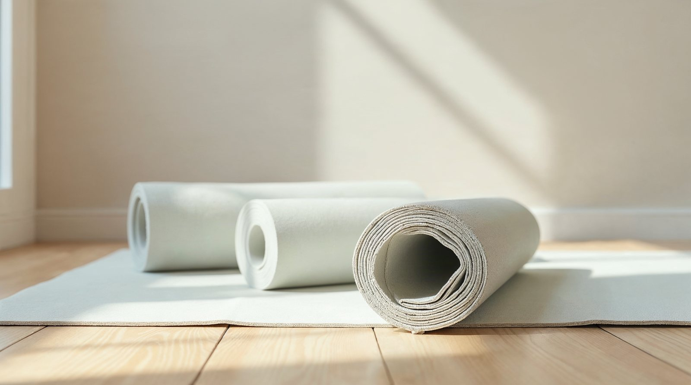
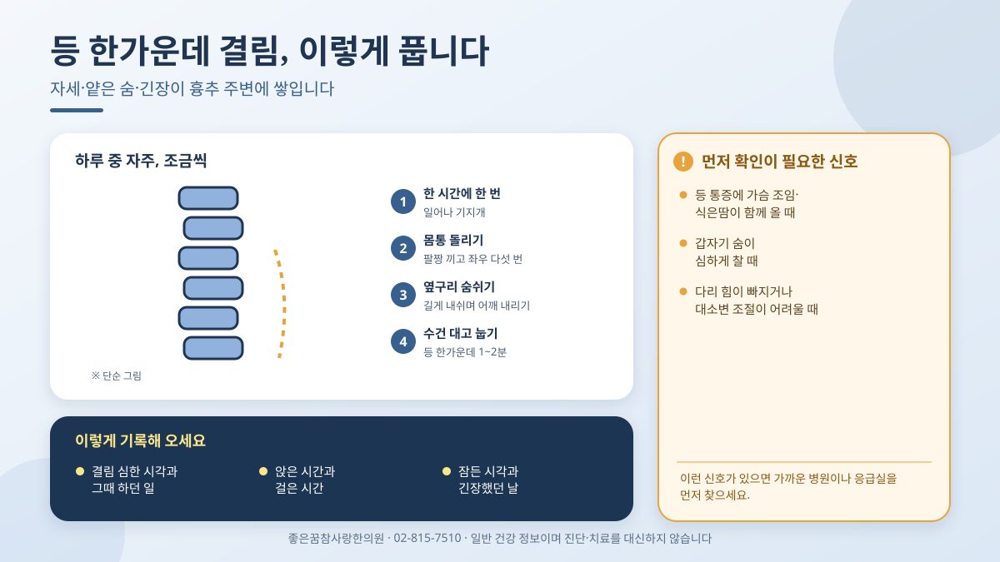

이종호 한의사 감수좋은꿈참사랑한의원 대표원장 (한의사 면허번호 19769)발행 2026-11-26 · 수정 2026-11-26
이 글의 차례
오후 세 시쯤, 모니터 앞에서 일하다 문득 등 한가운데가 뻐근하다는 걸 느낍니다. 손을 뒤로 돌려 날개뼈 사이를 눌러 보려 해도 손이 잘 닿지 않습니다. 의자 등받이에 등을 대고 비벼 보거나, 문틀에 기대 눌러 보며 하루를 버팁니다.
진료실에서 "등 가운데가 늘 결려요"라고 말씀하시는 분이 정말 많습니다. 어깨나 허리처럼 딱 짚어 말하기 어려운 자리라서, 오래 참다가 오시는 경우가 흔합니다. 어떤 분은 몇 년째 그 자리가 묵직하다고 하십니다.
등 한가운데는 흉추라고 부르는 등뼈가 지나가고, 그 양옆으로 갈비뼈가 이어지며, 위로는 목과 어깨, 아래로는 허리와 연결되는 자리입니다. 앞으로는 가슴과 숨쉬는 근육이 맞닿아 있어서 자세와 숨, 긴장이 한꺼번에 모이는 곳이기도 합니다.
이 글에서는 등 한가운데가 왜 늘 뻐근해지는지, 근육의 결림과 다른 이유의 등 통증을 어떻게 나눠 보는지, 집에서 무엇을 해 볼 수 있는지를 차례로 풀어 보겠습니다.
등 한가운데가 결린다는 건 어떤 상태인가요?
등 한가운데가 결린다고 하실 때 가장 흔한 것은 등뼈 양옆을 따라 길게 이어지는 근육과 날개뼈 사이를 잇는 근육이 오래 긴장해 굳은 상태입니다. 손으로 눌러 보면 단단하게 뭉친 줄기나 콕 집히는 자리가 만져지는 경우가 많습니다.
이 근육들은 우리가 앉아 있든 서 있든 등을 세우기 위해 하루 종일 일합니다. 등을 구부정하게 숙이고 있으면 이 근육들은 늘어난 채로 버티게 되고, 그 상태가 길어지면 묵직하고 뻐근한 느낌이 쌓입니다.
등뼈 자체의 움직임이 줄어든 것도 함께 오는 경우가 많습니다. 흉추는 원래 몸을 돌리고 젖히는 데 큰 몫을 하는데, 오래 같은 자세로 지내면 마디마디가 굳어 잘 움직이지 않게 됩니다. 그러면 그 위아래의 목과 허리가 대신 무리하게 됩니다.
갑자기 '뜨끔' 하고 숨쉬기도 불편한 날카로운 통증이 생기는 경우는 흔히 담이 걸렸다고 표현하는데, 이 글에서는 그보다 오래 이어지는 묵직한 결림을 주로 이야기합니다.
왜 등 한가운데가 늘 뻐근해질까요
가장 큰 이유는 자세입니다. 모니터와 휴대폰을 보느라 고개가 앞으로 나오고 어깨가 말리면, 등 한가운데는 둥글게 굽은 채로 하루를 보냅니다. 이 자세에서 등 근육은 머리와 어깨의 무게를 뒤에서 붙잡아야 해서 쉬지 못합니다.
두 번째는 숨입니다. 긴장하거나 오래 앉아 있으면 숨이 얕아지고, 배와 갈비뼈 아래쪽보다 가슴 위쪽과 어깨로 숨을 쉬게 됩니다. 이렇게 숨을 쉬면 갈비뼈와 등뼈 사이의 움직임이 줄어들고, 등 한가운데가 더 굳기 쉽습니다.
세 번째는 마음의 긴장입니다. 걱정이 많거나 쫓기는 시기에는 어깨가 귀 쪽으로 올라가고 등이 움츠러듭니다. 스스로는 잘 모르지만 하루 종일 몸에 힘이 들어가 있는 셈이라, 저녁이 되면 등이 돌덩이처럼 무겁게 느껴집니다.
네 번째는 움직임 부족입니다. 등은 몸을 돌리고 젖히며 써야 부드러워지는데, 앉아서 일하고 앉아서 이동하고 앉아서 쉬는 하루에는 등을 돌리거나 젖힐 일이 거의 없습니다. 쓰지 않는 마디는 점점 굳어 갑니다.
춥고 찬 바람에 몸을 움츠리고 다니는 계절에도 등 결림이 늘어납니다. 겨울에 두꺼운 외투와 무거운 가방을 메고 어깨를 웅크린 채 지내다 보면, 등 한가운데가 하루 종일 긴장한 상태로 버티게 됩니다.
근육 결림과 다른 등 통증은 어떻게 나눠 보나요?
등 한가운데의 통증은 대부분 근육과 자세에서 오지만, 드물게 등 안쪽의 장기나 다른 이유에서 오는 경우도 있습니다. 그래서 아래처럼 나눠 보며 함께 살핍니다.
- 자세를 바꾸거나 누르면 아픈 자리가 분명하고 움직이면 달라지는 경우
- 몸을 돌리거나 숨을 크게 쉴 때 갈비뼈를 따라 찌릿한 경우
- 식사와 관련해 윗배와 등이 함께 묵직해지는 경우
- 움직임과 상관없이 밤에도 계속 아프고 점점 심해지는 경우
첫 번째는 근육과 관절에서 오는 결림인 경우가 많습니다. 두 번째는 갈비뼈 사이 신경이나 갈비뼈와 등뼈가 만나는 자리의 불편을 함께 생각합니다. 세 번째처럼 소화와 함께 오는 등 통증은 위나 쓸개를 함께 살펴야 할 수 있어 내과 진료를 권합니다.
네 번째처럼 자세와 상관없이 쉬어도 가라앉지 않고 점점 심해지는 통증, 체중이 줄거나 열이 함께 나는 통증은 근육 결림과 다르게 봐야 해서 병원 검사를 먼저 받아 보시길 권합니다.
비슷해 보이지만 다른 등의 불편
목 뒤가 볼록하게 솟고 등 위쪽이 굽어 보이는 경우는 흔히 버섯목이라고 부르는데, 등 한가운데보다 목과 등이 만나는 자리의 문제가 먼저 눈에 띕니다. 등 결림과 함께 오는 경우가 많아 함께 살핍니다.
어깨와 등에 담이 자주 걸리고 눌렀을 때 멀리까지 퍼지는 아픈 자리가 여러 곳 있다면 근막통증증후군을 함께 생각합니다. 등 한가운데 한 곳보다 여러 자리가 번갈아 아픈 것이 특징입니다.
척추가 옆으로 휘었다는 말을 들으신 분은 한쪽 등이 더 결리고 피곤하다고 하시는 경우가 많습니다. 이때는 휜 정도보다 일상의 자세와 피로가 어떻게 쌓이는지를 함께 봅니다.
나이와 생활에 따라 달라지는 등 결림
10대와 20대에는 공부와 휴대폰, 노트북으로 고개를 숙인 시간이 길어 등 위쪽과 한가운데가 일찍 굳는 경우가 많습니다. 젊어서 괜찮겠지 하고 넘기기 쉽지만, 이 시기에 자세 습관을 잡아 두면 나중이 한결 편합니다.
30대와 40대에는 일과 육아가 겹치며 앉아 있는 시간과 아이를 안는 시간이 함께 늘어납니다. 등은 하루 종일 굽혀 있다가 무거운 것을 드는 일까지 맡게 되어 저녁이면 묵직해지기 쉽습니다.
50대 이후에는 등뼈 마디가 조금씩 굳고 등이 앞으로 굽는 흐름이 생기기 쉽습니다. 이 시기에는 등을 펴고 돌리는 움직임을 꾸준히 이어 가는 것이 숨쉬기와 걷기, 균형에도 도움이 됩니다.
먼저 이렇게 여쭙니다
등 결림으로 오시면 저는 대략 이런 순서로 여쭙니다. 정확한 시간이나 숫자가 아니어도 괜찮으니, 떠오르는 대로 편하게 말씀해 주세요.
- 결리는 자리는 날개뼈 사이 한가운데인가요, 한쪽인가요?
- 언제부터였고, 하루 중 언제 가장 심한가요?
- 하루에 앉아 있는 시간과 화면을 보는 시간은 얼마나 되나요?
- 숨을 크게 쉬거나 몸을 돌릴 때 달라지나요?
- 소화가 불편하거나 식사 뒤에 등이 더 무거운가요?
- 요즘 잠은 어떻고, 마음이 쫓기는 일은 없나요?
이 대답을 모아 보면 결림이 자세에서 오는지, 숨과 긴장에서 오는지, 다른 이유를 함께 살펴야 하는지 방향이 잡힙니다.
집에서 해 볼 수 있는 간단한 확인
등이 얼마나 굳어 있는지 집에서 간단히 확인해 볼 수 있습니다. 아프면 바로 멈추시면 됩니다.
- 의자에 바르게 앉아 팔짱을 끼고 몸통을 좌우로 돌려 양쪽을 비교해 보기
- 벽에 뒤통수와 등, 엉덩이를 붙이고 서서 어디가 잘 닿지 않는지 보기
- 숨을 크게 들이쉬며 갈비뼈 옆구리에 손을 대고 양쪽이 고르게 벌어지는지 보기
한쪽으로 돌리기가 유난히 뻑뻑하거나, 벽에 등을 붙이기가 어렵다면 등뼈 마디의 움직임이 줄어 있을 수 있습니다. 숨을 들이쉴 때 한쪽 옆구리만 덜 벌어진다면 그쪽 갈비뼈와 등 근육이 더 굳어 있을 수 있습니다. 어느 쪽이 더 불편했는지 적어 오시면 진료에 도움이 됩니다.
일상에서 먼저 해 볼 수 있는 것
등 결림은 한 번에 풀기보다 하루 중 자주 조금씩 움직여 주는 것이 효과적인 방법입니다. 아래 가운데 할 수 있는 것부터 시작해 보세요.
- 모니터를 눈높이까지 올리고, 노트북은 받침대와 따로 키보드 쓰기
- 한 시간에 한 번 일어나 양팔을 머리 위로 뻗고 기지개 켜기
- 의자에 앉아 팔짱을 끼고 몸통을 좌우로 천천히 다섯 번씩 돌리기
- 둘둘 만 수건을 등 한가운데에 대고 누워 1~2분 숨 쉬기
- 잠들기 전 옆으로 누워 위쪽 팔을 뒤로 펼치며 가슴 열기
숨쉬기도 함께 연습해 보세요. 의자에 앉아 양손을 갈비뼈 아래 옆구리에 대고, 코로 숨을 들이쉬며 손이 옆으로 벌어지는 느낌을 찾아봅니다. 내쉴 때는 입으로 길게 내쉬며 어깨를 아래로 툭 내려놓습니다. 하루 몇 번, 한 번에 다섯 번씩이면 충분합니다.
걷기도 등을 푸는 좋은 방법입니다. 팔을 자연스럽게 앞뒤로 흔들며 걸으면 몸통이 가볍게 돌아가며 등뼈 마디가 함께 움직입니다. 휴대폰을 보며 걷기보다 고개를 들고 앞을 보며 걸어 보세요.
잠자리도 한번 살펴보세요. 베개가 너무 높으면 밤새 고개가 앞으로 숙여져 등 위쪽이 당기고, 너무 꺼지는 매트리스에서는 등이 둥글게 말린 채로 자게 됩니다. 아침에 등이 유난히 뻣뻣하다면 베개 높이부터 조절해 보시길 권합니다.
따뜻한 샤워나 찜질은 굳은 등 근육을 잠시 느슨하게 해 줍니다. 찜질 뒤에 가볍게 몸통 돌리기를 이어 하면 풀린 느낌이 조금 더 오래갑니다.

피하면 좋은 습관
침대에 엎드려 팔꿈치로 상체를 받치고 휴대폰을 보는 자세는 목과 등 한가운데에 큰 부담을 줍니다. 소파에 비스듬히 누워 오래 화면을 보는 자세도 마찬가지입니다.
한쪽 어깨로만 무거운 가방을 메는 습관, 다리를 꼬고 한쪽으로 기대 앉는 습관도 등의 좌우 균형을 흐트러뜨립니다. 가방은 양쪽으로 메고, 앉을 때는 엉덩이를 의자 깊숙이 넣어 앉아 보세요.
결리는 자리를 딱딱한 물건으로 세게 오래 누르거나, 남에게 등을 밟아 달라고 하는 것은 권하지 않습니다. 순간 시원할 수 있지만 근육과 갈비뼈에 부담이 될 수 있습니다.
한의원에서 함께 살필 수 있는 경우
- 날개뼈 사이 등 한가운데가 몇 주 이상 늘 묵직한 경우
- 오후나 저녁이 되면 등이 굳어 의자에 앉아 있기 힘든 경우
- 몸을 돌리거나 기지개를 켤 때 등이 뻑뻑하게 걸리는 경우
- 긴장하면 숨이 얕아지고 등과 가슴이 함께 조이는 경우
- 등 결림과 함께 목, 어깨가 자주 뻐근한 경우
좋은꿈참사랑한의원에서는 진찰한 내용을 바탕으로 생활에서 바꿔 볼 것과 함께 침 치료, 추나요법 가운데 지금 상태에 맞는 것을 정합니다. 추나는 등뼈와 갈비뼈의 움직임을 먼저 살핀 뒤 몸에 맞는 기법과 세기를 고르고, 강한 교정이 부담스러운 분께는 부드러운 방법을 택합니다.
소화와 함께 오는 등 통증이나 쉬어도 가라앉지 않는 통증은 내과나 정형외과 진료를 함께 받아 보시길 권합니다. 다른 병원에서 받은 약이 있다면 알려 주시고, 처방받은 약은 상의 없이 멈추지 않습니다.
이렇게 기록해 오시면 상담이 쉬워집니다
등 결림은 하루의 자세와 긴장을 그대로 따라갑니다. 1~2주 정도만 간단히 적어 보세요.
- 결림이 심했던 시각과 그때 하던 일
- 결림 정도를 0~10점으로
- 하루 앉아 있었던 시간과 걸은 시간
- 잠든 시각과 깬 시각, 아침에 등이 개운했는지
- 마음이 쫓기거나 긴장했던 날
기록을 나란히 보면 결림이 심한 날과 오래 앉은 날, 잠이 부족한 날이 겹치는 경우가 많습니다. 그 연결이 보이면 무엇부터 바꿀지 분명해집니다.
등을 펴는 시간을 하루에 조금씩
등 한가운데의 결림은 하루아침에 생긴 것이 아니라 오랜 자세와 숨, 긴장이 쌓인 결과인 경우가 많습니다. 그래서 푸는 것도 하루 중 조금씩, 자주 하는 것이 좋습니다.
이번 주에는 한 시간에 한 번 일어나 기지개를 크게 켜는 습관 하나만 시작해 보세요. 다음에 오실 때 등이 가장 무거웠던 시간과 그때 하던 일을 들려주시면, 거기서부터 함께 풀어 가겠습니다. 오래 참아 오셨다면 그동안 등이 많이 애썼다는 뜻이기도 합니다. 이제는 등에게 쉬는 시간을 조금씩 돌려주시면 됩니다.
이런 증상은 먼저 확인이 필요합니다
- 등 통증이 가슴을 쥐어짜는 느낌, 식은땀, 숨참과 함께 갑자기 오는 경우
- 등 통증과 함께 다리에 힘이 빠지거나 대소변을 조절하기 어려워지는 경우
이런 신호가 있으면 한의원보다 가까운 병원이나 응급실을 먼저 찾으세요.
함께 읽으면 좋은 글
- 어깨와 등이 늘 뭉쳐 있고 담이 자주 걸리는 근막통증증후군은 어떻게 살피나요?
- 목 뒤가 볼록하게 솟고 등이 굽어 보이는 버섯목은 왜 생기고 어떻게 살피나요?
- 숨을 크게 쉬거나 몸을 돌릴 때 갈비뼈가 찌릿한 늑간신경통·늑연골염은 어떻게 살피나요?
- 척추측만증이 있는 사람이 목·어깨가 자주 피곤할 때는 생활에서 무엇을 점검하나요?
- 옆구리와 등 뒤쪽이 아플 때 근육 문제인지 어떻게 구분해서 보나요?

여쭙는 것
- 결리는 자리는 날개뼈 사이 한가운데인가요, 한쪽인가요?
- 언제부터였고, 하루 중 언제 가장 심한가요?
- 하루에 앉아 있는 시간과 화면을 보는 시간은 얼마나 되나요?
생활에서 해 볼 것
- 모니터를 눈높이까지 올리고, 노트북은 받침대와 따로 키보드 쓰기
- 한 시간에 한 번 일어나 양팔을 머리 위로 뻗고 기지개 켜기
- 의자에 앉아 팔짱을 끼고 몸통을 좌우로 천천히 다섯 번씩 돌리기
한의원에서 함께 살필 것
- 날개뼈 사이 등 한가운데가 몇 주 이상 늘 묵직한 경우
- 오후나 저녁이 되면 등이 굳어 의자에 앉아 있기 힘든 경우
- 몸을 돌리거나 기지개를 켤 때 등이 뻑뻑하게 걸리는 경우
먼저 확인이 필요한 신호
- 등 통증이 가슴을 쥐어짜는 느낌, 식은땀, 숨참과 함께 갑자기 오는 경우
- 등 통증과 함께 다리에 힘이 빠지거나 대소변을 조절하기 어려워지는 경우
한눈에 보는 표
| 구분 | 핵심 |
|---|---|
| 여쭙는 것 | 결리는 자리는 날개뼈 사이 한가운데인가요, 한쪽인가요? 언제부터였고, 하루 중 언제 가장 심한가요? |
| 생활에서 해 볼 것 | 모니터를 눈높이까지 올리고, 노트북은 받침대와 따로 키보드 쓰기 한 시간에 한 번 일어나 양팔을 머리 위로 뻗고 기지개 켜기 |
| 한의원에서 함께 살필 것 | 날개뼈 사이 등 한가운데가 몇 주 이상 늘 묵직한 경우 오후나 저녁이 되면 등이 굳어 의자에 앉아 있기 힘든 경우 |
| 먼저 확인이 필요한 신호 | 등 통증이 가슴을 쥐어짜는 느낌, 식은땀, 숨참과 함께 갑자기 오는 경우 등 통증과 함께 다리에 힘이 빠지거나 대소변을 조절하기 어려워지는 경우 |
자주 묻는 질문
등 한가운데가 결리는데 내장 문제일 수도 있나요?
대부분은 자세와 근육에서 오지만, 식사와 관련해 윗배와 함께 아프거나 쉬어도 가라앉지 않는 통증이라면 내과 진료를 함께 받아 보시길 권합니다.
폼롤러로 등을 풀어도 되나요?
등 한가운데를 가볍게 굴리며 숨을 쉬는 정도는 도움이 될 수 있습니다. 아픈 자리를 세게 오래 누르기보다 짧고 부드럽게 해 주세요.
추나는 강하게 하나요?
등뼈와 갈비뼈의 움직임을 먼저 살핀 뒤 몸에 맞는 세기를 고릅니다. 강한 교정이 부담스러우시면 미리 말씀해 주세요.
자세를 바로 하려고 등을 꼿꼿이 세우고 있으면 더 피곤해요.
한 자세로 오래 버티는 것보다 자주 바꾸는 것이 등에 편합니다. 바른 자세를 잠깐씩 찾고, 한 시간에 한 번 일어나 움직여 주세요.
숨을 쉴 때 등이 같이 아프면 어떻게 하나요?
갈비뼈 주변 근육이나 신경의 불편일 수 있어 진찰 때 함께 살핍니다. 숨을 쉴 때 어느 자리가 아픈지 손으로 짚어 기억해 오시면 도움이 됩니다.
좋은꿈참사랑한의원은 재진 때 지난번 이야기부터 이어서 여쭙니다. 진료시간과 예약은 오시는 길에서 확인하세요.
어디서 상담받을 수 있나요?
좋은꿈참사랑한의원은 서울 동작구 만양로2길 2 신성빌딩 3층·5층(서울 동작구 상도동, 7호선 상도역 3번 출구 근처)에 있습니다. 한의사 3명(이종호 대표원장, 조영기 수석진료원장, 정원영 진료원장)이 진료합니다. 진료시간은 평일 09:30~20:00(점심 13:00~14:00), 토·일·공휴일 09:30~15:00이며, 방문 전 전화로 확인을 권합니다. 예약은 네이버 예약, 카카오톡 상담, 전화 02-815-7510로 받습니다.
이 글은 일반적인 건강 정보이며 개인의 진단이나 치료를 대신하지 않습니다. 증상이 있거나 복용 중인 약이 있다면 진료를 통해 확인하세요. 치료 효과는 개인마다 다를 수 있습니다.
작성 기준: 일반적으로 알려져 있는 건강 정보를 참고해 정리했습니다(대표원장 감수). 증상 기록은 1~2주 동안 하루 1회, 비슷한 시간에 적어 오시면 지난 상태와 비교하기 쉽습니다.